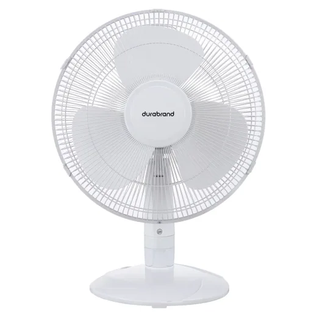
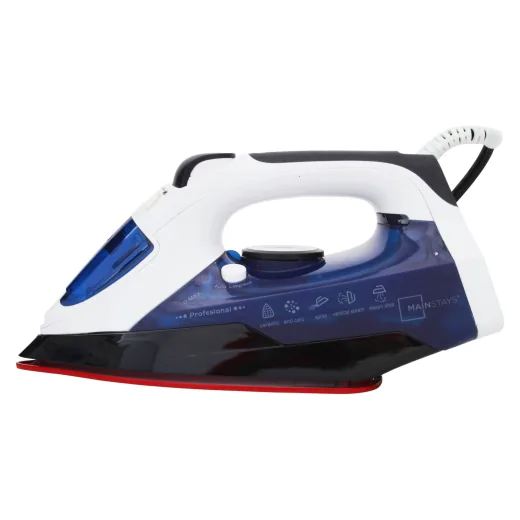

Inicio › Pequeños electrodomésticos

Mainstays
Ventilador Mainstays de mesa 3 velocidades · 16 Pulgadas
L 495
En Walmart
Precio en cada tienda
| Tienda | Precio | Antes | Disponibilidad | |
|---|---|---|---|---|
| Walmart | L 495 | — | Disponible | Ver en tienda › |
Precios referenciales tomados de cada tienda el 28 de noviembre de 2026. El precio válido es el que muestra la tienda al comprar.
Historial de precio
Lo seguimos desde el 13 de noviembre. Precio más bajo registrado: L 495 en Walmart (13 de noviembre), igual que hoy. El precio no ha cambiado en ese tiempo.
Características
| Color | Blanco |
|---|---|
| Marca | Durabrand |
| Medida de altura | 50 cm |
| Medida de ancho | 35 cm |
| Medida de peso | 2.5 kg aproximádamente |
| Medida de profundidad | 30 cm |
| Modelo o serie del producto | FT40G |
| País de Origen - Ensamblaje | China |
| Acabado | Brillante |
| Material | Plástico y acero inoxidable |
| Uso recomendado | Ideal para enfriar espacios pequeños a medianos |
| Voltaje | 120 V |
| Watts de potencia | 45 W |
| Fabricante | Walmart |
Descripción
El ventilador de mesa Mainstays de 16 pulgadas ofrece tres velocidades ajustables para proporcionar un flujo de aire eficiente y silencioso. Ideal para uso en el hogar o la oficina, su diseño compacto permite fácil transporte y almacenamiento. ¡Llévalo hoy y siente la diferencia!
Información del producto: La información de este producto es proporcionada por fabricantes y distribuidores. Te recomendamos verificar las especificaciones con el fabricante para obtener detalles más actualizados.
Otros pequeños electrodomésticos Mainstays
 Plancha Mainsatys Vaporizador ManualL 495En Walmart
Plancha Mainsatys Vaporizador ManualL 495En Walmart
Plancha Mainstays de Vapor AntiadherenteL 495En Walmart Plancha a vapor Mainstays antiadherente · ES2515 ESL 495En Walmart
Plancha a vapor Mainstays antiadherente · ES2515 ESL 495En Walmart Hervidor Mainstays de acero inoxidable capacidad de 1.7 LL 495En Walmart
Hervidor Mainstays de acero inoxidable capacidad de 1.7 LL 495En Walmart Ventilador MainStays Redondo de Mesa · 8 PulgadasL 395En Walmart
Ventilador MainStays Redondo de Mesa · 8 PulgadasL 395En Walmart Plancha a vapor Mainstays antiadherente · Manten DisenadaL 325En Walmart
Plancha a vapor Mainstays antiadherente · Manten DisenadaL 325En Walmart Ventilador Mainstays Mini Luz Led TactilL 695En Walmart
Ventilador Mainstays Mini Luz Led TactilL 695En Walmart Sartén eléctrico Mainstays redondo de 12 PulgadasL 695En Walmart
Sartén eléctrico Mainstays redondo de 12 PulgadasL 695En Walmart